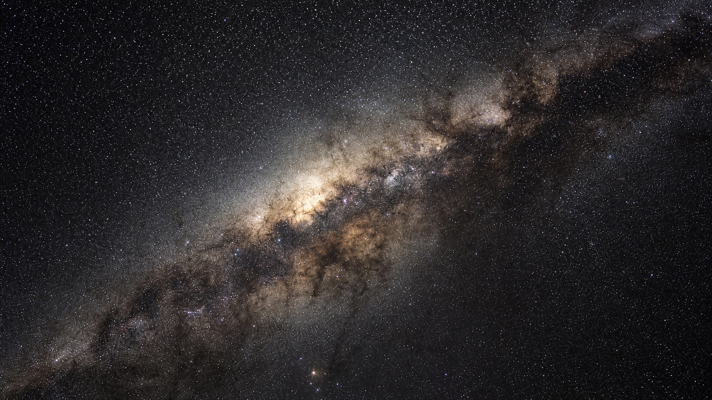
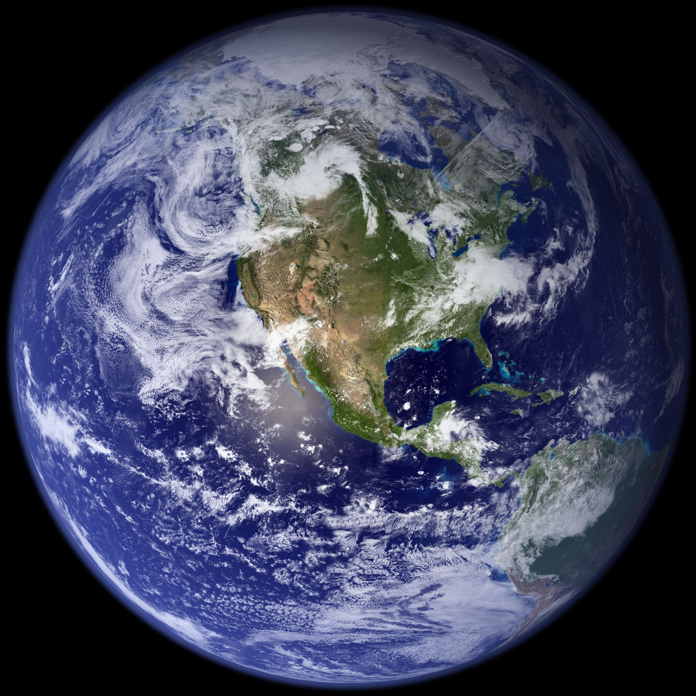

False colour — a one-channel measurement drawn as brightness.
The speed of light is 186,000 miles a second — seven times around the Earth, in one second. Nothing can go faster.
Your watch always ticks the same. One second, then the next.
But travel fast enough, and come home, and less time will have passed for you than for everyone you left behind.
That is not science fiction. It really happens.
Move the slider to go faster. Press Return to Earth to come home.
Your clock is fine. It is everyone else's that runs away.
A one-slider exhibit in special relativity, built on the real sky. You start on a hillside at night, climb out of the air, pick a speed, and — when you have seen enough — turn around and come home. Everything on the dashboard follows from the single number that slider sets.
The two clocks are the point. Yours is not simulated: it is your own device's clock, ticking at its ordinary rate, because going fast has never felt like anything from the inside. Earth's is the calculated one, and the growing gap between them is what the trip costs you. That gap only hardens into a single fact when the two clocks are back in the same place, which is what Return to Earth is for.
The sky is three real things, stacked. Underneath is a photograph — ESO's 360-degree panorama of the actual Milky Way, 120 hours of shutter time from the Chilean desert, sampled by galactic longitude and latitude so it sits exactly where the real sky does. Over that sit 9,096 catalogue stars at their real positions and real brightnesses. Filling everything, and invisible until you are going very fast indeed, is the microwave background. All three go through the same transform; nothing is swapped out for a different picture as you speed up.
Your motion does three things to all of it at once. Aberration changes the direction light seems to come from, so the sky crowds into the view ahead. Doppler shift changes its colour. Beaming changes its brightness. The last two are the same number — which is why colour and brightness can never drift apart here.
Star colour is not a free choice either. The catalogue gives a colour index, that gives a temperature, and a blackbody at that temperature has exactly one colour. A real star is not quite a blackbody — absorption lines and molecular bands pull its spectrum off the ideal curve, and interstellar dust reddens what reaches us before the catalogue ever measures it — so take this as a good approximation of a star's colour rather than a measurement of it.
Most movies get this wrong. There is no blue tunnel and there are no streaks: aberration moves stars, it does not smear them. And nothing twinkles — scintillation is something the atmosphere does, not something stars do.
The band across the sky is the Milky Way — not a picture behind the stars, but the combined light of the hundred billion or more of them you cannot pick out, going through the same transform. The dark shapes torn out of it are dust: the Great Rift, the Coalsack, the Pipe. It is nearly colourless to the eye, and the photographs of it you have seen in purple and gold almost always got that from a long exposure, not from anyone's eyes.
Everything below is live. The right-hand value under each formula is what that expression evaluates to at your current speed — leave this open, drag the rail, and watch them move. Nothing in the physics is fitted or tuned — no free parameters anywhere between β and the light arriving at your eye. The free choices all sit at the display end, where they have to: an overall exposure, a separate scale for the Milky Way's brightness, the tone curve that lands the result inside what a monitor can actually show, and — for the photographic layer only — a compressed stand-in for beaming, because no screen can carry the real thing over this range. That last one is a genuine departure rather than a scaling, and it is the reason the modelled star field and the photograph behind it are described separately under Scope, where all four are listed.
β = v / c
The one input. Everything else on this page is a
function of it.
γ = 1 / √(1 − β²)
The stretch factor, and the number the whole exhibit
runs on. γ = 2 means two seconds pass at home for every one of yours.
It is 1 at rest and climbs without limit as β approaches 1.
τ — measured, not computed
This one is not simulated. It is your own device's
clock, ticking normally, because that is the entire point: travelling
fast does not feel like anything.
t = ∫ γ dτ
Accumulated every frame along your path. The integral
is exact for any speed history, including the ramps where the
ship speeds up and slows down — so the numbers stay honest even while
you are dragging the rail around.
L = L₀ / γ
The other half of the same coin. From where you are
sitting the journey is genuinely shorter, which is how you cross four
light-years in under a year of your own time without ever passing c.
KE = (γ − 1) m c²
Why the speed limit is a limit. Reaching c would cost
infinite energy, so a thing with mass never gets there — it only ever
adds nines.
p = γ m v
The modern formulation. The phrase "relativistic mass"
appears nowhere in this exhibit, for the reasons Okun sets out —
mass is invariant, and γ belongs to the motion.
E₀ = m c²
Included for scale: the energy you would have to
find is measured against this.
tan(θ′/2) = k · tan(θ/2), k = √((1−β)/(1+β))
Light that reaches you from angle θ appears to arrive
from the smaller angle θ′, so the sky crowds forward. Same reason you
tilt an umbrella into vertical rain when you run.
cos θ′ = (cos θ + β) / (1 + β cos θ)
Algebraically identical, and close to the form you will
find in most textbooks. This build does not use it: it loses precision
near θ = 0, which at high γ is exactly where every star in the sky has
ended up. The half-angle form is stable across the whole range.
On the sign: textbooks usually print a minus, because they
measure θ along the direction the photon is travelling. Here θ is
measured toward the source — the angle light reaches you
from — and the two conventions are supplements. Under the
minus, θ = 90° at β = 0.7771 would come out at 141° rather than 39°:
the right answer pointed down the wrong half of the sky.
θ′ = 2 arctan k (≈ 1/γ radians at high speed)
The angle the entire forward hemisphere collapses into.
This is the exact figure, not the small-angle approximation.
Ω / 4π = (1/4π) ∫∫frame D² dΩ′
Aberration run backwards, to find where the light in
front of you started out. Aberration compresses solid angle by
exactly D², so this integral over the frame is the patch of sky it
came from. It is integrated rather than solved because the frame is
a rectangle — 49° tall and as wide as your window is — and
a rectangle has no closed form. It is also why this figure moves
when you resize: a phone held upright sees a good deal less sky than
a laptop does, and says so. On a 16:9 window half the sky arrives at
0.8428 c. Nearly all of it started out behind you.
α = arcsin(R⊕ / d), R⊕ = 6,371 km
A plain triangle, no relativity in it at all. This is
the angle Earth subtends at your present range — and it is the
number that collapses fastest on the whole trip, because d is
climbing at nearly light speed.
α′ = 2 arctan[ tan(α/2) / k ]
The same half-angle map as every star, run the other
way round. Put Earth at θ = π − ε and the cotangents cancel, leaving
tan(ε′/2) = tan(ε/2) / k — so the planet behind you is
magnified by exactly the factor that shrinks the sky ahead.
The forward cone's light has to come from somewhere, and where it
comes from is the rear of the sky being stretched thin. Hold
Look behind and this is the disc you are looking
at.
α′ = 2 arctan[ k · tan(α/2) ]
And on the way home, the same map the usual way round:
the planet you are flying at is squeezed toward the middle of the
frame along with everything else. At 0.999 c it is forty-five times
smaller than the triangle says.
Dastern = k, surface brightness ∝ D⁴
Earth is a surface, not a point, so its light follows
the D⁴ the Milky Way gets rather than the D² the stars do. Astern
that is k⁴, which at 0.9 c is 0.003 — the planet is not dim, it is
gone. What the exhibit draws is a compressed stand-in, and
it is listed with the other display choices under Scope.
D = 1 / [ γ (1 − β cos θ′) ]
How much your motion squeezes or stretches the light
arriving from angle θ′ — the angle you actually see it at, in your
own frame, after aberration has already moved it. One number governs
colour and brightness, which is why the two can never
disagree here.
D = √((1+β)/(1−β)) · D = √((1−β)/(1+β))
The two extremes, where cos θ′ is +1 and −1. Note that
the astern factor is exactly the aberration constant k — the same
square root doing two jobs.
T′ = D · T
The fact that makes the whole relativistic transform a
one-line change to a temperature. A Doppler-shifted thermal spectrum
is still a thermal spectrum, just hotter — so a star's new colour is
found by looking up the same curve at a new temperature.
star ∝ D² surface ∝ D⁴
The light ahead is not only bluer, it is enormously
brighter — and the light behind has been robbed to pay for it. But
there are two exponents here, and which one applies depends on
whether you can resolve the thing. Iν/ν³ is a Lorentz
invariant, so brightness per unit of sky always goes as
D⁴ — that is the Milky Way, and every pixel of it. A star is a
point: you get that D⁴ multiplied by the solid angle its disc
subtends, and aberration has shrunk that disc by D², leaving D².
The photon accounting says the same thing more plainly — each
photon carries D times the energy and they arrive D times as
often, so the power is D × D and there is nowhere for two more
powers to come from. The band's total light goes as D² too; it
only looks like D⁴ because it is being crushed into 1/D² of the
sky at the same time.
B(λ,T) = (2hc² / λ⁵) · 1 / (e^(hc / λkBT) − 1)
Integrated from 360 to 830 nm against the CIE 1931
colour-matching functions — specifically the multi-lobe Gaussian fits
of Wyman, Sloan & Shirley (2013), which track the published tables
closely enough for this and save shipping a data file, rather than the
tables themselves. Converted to sRGB and built once at load into a
table indexed by log T. There is no RGB anywhere in the star data — a
star is a direction, a flux and a temperature.
T = 4600 K × [ 1/(0.92(B−V) + 1.7) + 1/(0.92(B−V) + 0.62) ]
How the catalogue's measured colour index becomes a
temperature, and from there a colour. Checks out at B−V = 0.65 →
5778 K, to four figures. Ballesteros derives it by treating a star
as a blackbody seen through the B and V filters, so it inherits that
assumption — it is a good relation for ordinary stars, not a law.
E = 2.54 × 10⁻⁶ × 10^(−0.4 V) lux
Real physical units, so the tone map at the end has
something to be anchored to rather than a number that only means
something internally.
T = D × 2.7255 K
The leftover glow of the Big Bang, normally invisible.
Squeeze it hard enough and the sky ahead begins to glow on its own —
which is what happens at the 0.99998 c rung, and why that rung exists.
| c | 299,792,458 m/s | exact, by definition of the metre |
|---|---|---|
| h | 6.62607015 × 10⁻³⁴ J·s | exact, SI 2019 |
| kB | 1.380649 × 10⁻²³ J/K | exact, SI 2019 |
| σ | 5.670374419 × 10⁻⁸ W·m⁻²·K⁻⁴ | Stefan–Boltzmann |
| T☉ | 5,778 K | the Sun's effective temperature — the traditional L/R figure. IAU 2015 Resolution B3 sets the nominal value at 5,772 K; the difference is far below anything you can see here |
| TCMB | 2.7255 K | Fixsen (2009) |
Yes. And Earth is not wrong. One word needs pinning down first, though: see. What you would literally see through a telescope is mostly about how long the light took to get to you — on the way out you would watch Earth's clock crawl, and on the way back you would watch it race, and neither of those is time dilation. Time dilation is what is left once you subtract the travel time of the light: not what a frame watches, but what it measures, after correcting for where the light started and how far it came.
Measured that way, while you are coasting, time dilation is completely symmetric — each of you measures the other's clock to be running slow, and both of you are right. That is reciprocity, and it is real physics, not an illusion.
The cluster on the left is showing Earth's clock in Earth's frame of reference, which is unambiguous. The comparison only becomes a single physical fact when the two clocks are back in the same place — which is what happens when you press Return to Earth.
What breaks the tie is that you changed reference frames and Earth never did, so there is no matching argument to run from your side. But the acceleration is only the tiebreaker; it is not what does the ageing. The size of the gap comes from the shape of your path: between the same two meetings, the straight, unaccelerated worldline is the one that accumulates the most proper time, and any detour accumulates less. Make the turnaround as brief and as violent as you like and the answer barely moves; make the trip longer or faster and it moves a great deal.
Your clock is not simulated. The traveler's elapsed time is your own device's clock, ticking normally, because that is the entire point: nothing about travelling fast feels like anything. Earth's clock is the calculated one.
Earth's elapsed time is ∫γ dτ along your path, accumulated every frame. That integral is exact for any speed history, including the ramps where the ship speeds up and slows down — so the numbers stay honest even while you are dragging the rail around.
This is special relativity only. Flat spacetime, no gravity, no gravitational time dilation. Accelerations are drawn as short ramps and their g-forces are ignored; the turnaround brings the ship to a full stop before it reverses, which is what makes each leg a plain constant-velocity problem.
The photographic sky stays, and it is one photograph. Every displayed ray is traced backward through the aberration equation, converted to galactic longitude and latitude, and used to sample ESO's all-sky panorama — so motion distorts the photograph itself rather than replacing it. It never twinkles. There is no rotation, crop or blend applied to it anywhere: the sky is pinned to the galactic frame and to nothing else, which means the photographed Milky Way and the catalogue stars drawn over it agree about where the band is.
What this replaced, since it matters. Until this revision the background was three images composited together — a front plate, a back plate and a soft filler panorama — joined by fitted per-channel gains and a speed-dependent feather, with the whole panorama rotated by a hand-picked angle so its band would line up with the front plate's diagonal. That rotation was a composition decision and it left the photographed Milky Way 38.6° from where the star catalogue put it. The filler panorama was also not a photograph: measured against a real all-sky plate its fine structure correlated at r = 0.06, below the floor set by comparing a real plate with a misaligned copy of itself, and it contained no Magellanic Clouds and no star bright enough to show a diffraction spike. It was almost certainly generated. The page claimed it was a photograph of the actual Milky Way. It was not, and that is why it is gone.
The transformed stars. 9,096 of them, from the Yale Bright Star Catalogue (Hoffleit & Warren 1991), J2000 — every star in it. The catalogue holds 9,110 entries, of which 9,096 are stars; the other 14 are novae and extragalactic objects kept only to preserve the numbering. It is drawn up to be complete to about magnitude 6.5 and its faintest entry here is 7.96, so the handful past 6.5 are a bonus rather than a survey. Real positions and real magnitudes throughout. Colour indices are real for all but 310 of them, which carry no measured B−V in the catalogue and are given its median (0.51, an early-G star) rather than an invented one. Positions are frozen at J2000: proper motion and precession are not modelled.
The Milky Way texture is photographic, not a catalogue. It supplies the visual depth of unresolved stars and dust. Its relativistic direction change is exact; its displayed Doppler colour and beaming are compressed into the range a monitor can show.
The four display parameters, named. Everything between β and the light arriving at your eye is computed. Four numbers past that point are chosen, and this is all of them: one overall exposure, set once so a first-magnitude star saturates its core and left alone at every speed; one separate scale for surface brightness, because a star's light lands in a sub-pixel point spread function and the Milky Way's is spread across degrees; one tone curve, 1 − e−x, which rolls off highlights without ever clipping a channel. The fourth is the odd one out and the least defensible: the photographic layer raises brightness as D1.28 rather than D⁴, capped at 60×, with a fitted colour balance. That is not an exposure — it changes the rate at which brightness grows with speed, so the photograph's response to beaming is qualitatively softened rather than merely rescaled. The modelled star field over it is not treated this way and carries the true exponent.
The microwave background is drawn. It fills the sky at 2.7255 K, which is far too cold to see, and for nearly the whole rail it contributes exactly zero — not a negligible amount, zero, because no visible photons survive the Wien tail at that temperature. Beaming raises it as D⁴ like any other surface brightness, and once the forward temperature passes about 700 K it appears as a dull red wash ahead and then climbs almost vertically: invisible at 0.9999 c, and roughly 200 times the Milky Way's peak surface brightness at 0.99998 c. That cliff is why the rung is there. Its brightness and colour come from the same Planck integral as everything else; the shader samples that result rather than recomputing it, so the two skies cannot disagree. At the top of the rail it saturates the view ahead to white, which is the honest answer — at that speed the blueshifted background is a genuine hazard, not a backdrop.
The opening view is fully dark-adapted. You begin with the sensitivity an observer would have after sitting in darkness, rather than waiting through that adaptation on the page. At this luminance the Milky Way is nearly colourless because rod vision dominates; Doppler colour appears as beaming makes the light bright enough for cone vision.
Colour. Planck's law integrated against analytic fits to the CIE 1931 colour-matching functions (Wyman, Sloan & Shirley 2013, not the published tables), converted to sRGB, gamut-mapped by desaturating toward white rather than clipping a channel. Tone-mapped once at the end. A monitor cannot reproduce a retina's absolute response, so the transformations and relative brightness are physical while the final display exposure is a calibrated representation. Assumes a reasonably dark room and an sRGB display.
The way home. Earth is held straight ahead as a black silhouette against the star field. Its apparent size grows as the range closes — it starts as a point you could miss and swells as you arrive — and it goes through the same aberration as everything else, so at high speed it is squeezed toward the middle of the frame along with the stars. Two deliberate departures: the disc is floored at a few pixels, because a light-minute out Earth really is smaller than one and a target you cannot see is not a target, and it is capped well short of the frame instead of swelling to fill the sky in the last moments. The Sun is intentionally kept out of this view so you can watch Earth approach.
The sky itself is a photograph by someone, and here is who. The all-sky panorama is The Milky Way panorama, credit ESO/S. Brunier — eso0932a, released by the European Southern Observatory under CC BY 4.0. Serge Brunier shot it from La Silla and Paranal between August 2008 and February 2009: about 300 fields, four exposures each, six minutes apiece, roughly 1,200 photographs and 120 hours of shutter time, assembled by Frédéric Tapissier. It is used here at 4096 × 2048 in galactic coordinates, and it is the only picture the exhibit shows you by default — everything else on screen at rest is computed. The thirteen plates behind the wavelength control are photographs too, and they are credited below.
Einstein (1905), Zur Elektrodynamik bewegter Körper, for all of the above. Ballesteros (2012) for B−V → temperature. Wyman, Sloan & Shirley (2013) for the colour-matching function fits. Hoffleit & Warren (1991) for the Yale Bright Star Catalogue. Fixsen (2009) for the microwave background temperature. Okun (2009) on why the words "relativistic mass" appear nowhere here. Bland-Hawthorn & Gerhard (2016) and Dwek et al. (1995) for the shape of the Galaxy, and the GRAVITY Collaboration (2019) for the Sun's 8.178 kpc distance from its centre. The magnitude-to-lux zero point (2.54 × 10⁻⁶ lux at V = 0) is the standard photometric conversion rather than a result from any of these.
The other thirteen skies. The plates behind the wavelength control are all-sky surveys served by NASA's SkyView (McGlynn, Scollick & White 1998), reprojected to galactic plate carrée: COBE/DIRBE zodi-subtracted mission average at 1.25, 2.2, 3.5, 4.9 and 240 µm (COBE Team); IRAS/IRIS at 12, 25 and 60 µm (Miville-Deschênes & Lagache 2005); the 100 µm dust map of Schlegel, Finkbeiner & Davis (1998); Planck 857 and 353 GHz (ESA/Planck Collaboration); the 408 MHz all-sky map of Haslam et al. (1982); and the ROSAT all-sky survey diffuse background (Snowden et al. 1997). All are public-domain or openly licensed.
What has been done to those plates, and why. Three things, none of them physics. The catalogue's stars are notched out of them. The exhibit draws the Bright Star Catalogue as a separate layer over the plate, and the star canvas is composited additively — so any star present in both was being drawn twice. Each catalogue star is found in the plate and its disc replaced with the local background, which removes about three quarters of the doubled light from the brightest stars; the photographic diffraction spikes of the very brightest survive, because taking those out would mean scrubbing a wide patch of real sky around each one. The IRAS plates have their gaps filled. IRAS surveyed about 96% of the sky, and the missing 3% is filled with the gap-free 100 µm dust map scaled to match — real structure, but from the wrong wavelength, and not a measurement at that wavelength. They are display-stretched, not linear. Each plate is an arcsinh stretch of the survey's intensity, chosen to keep faint structure visible without blowing out the Galactic plane, so these are pictures of the sky rather than calibrated intensity — the same standing as the visible photograph. Every band but the visible one is false colour: a single-channel measurement drawn as brightness.
The bands are not what you would see. They are what an instrument sees. Aberration and the Doppler factor are applied to them exactly as they are to the visible sky — that part is the same physics on the same code — but no speed on this rail turns an X-ray sky into something a human eye could receive. The wavelength control is the one place this exhibit shows you a sky you could not have.
· This session is remembered while the tab is open.